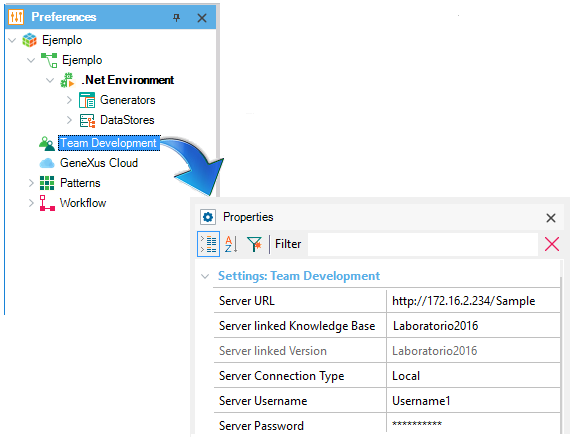

The purpose of the Team Development Node is to centralize all the properties of the connection with GeneXus Server.  It's properties are:
|
| Backlinks | |
| Create Knowledge Base from GeneXus Server dialog | Disconnect From Server |
| Category:Knowledge Base Preferences |